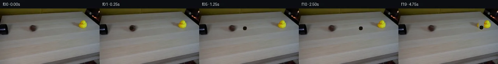

![首帧]()

Round 00
2026-11-04T20:55:55.661599+00:00像素候选变化代码 +351/−0inspection 更新
pixels 81e032336cd414b2 · code 2e64ef4ad0003a65
查看本轮 generate.py 真实 diff
--- previous/generate.py
+++ current/generate.py
@@ -0,0 +1,351 @@
+#!/usr/bin/env python3
+"""
+generate.py — PixelWorld-Text Case 0007 Attempt 02
+Generates 20 RGB frames (256x144) at 4 fps showing a brown tennis ball
+rolling out of a black pipe and hitting a yellow rubber duck on a table.
+
+Method: Pure numpy pixel operations with analytic Lambertian sphere rendering.
+Frame 00 is byte-exact copy of first_frame.png.
+"""
+
+import numpy as np
+from PIL import Image
+import os, json, struct, zlib
+
+# ── Configuration ──────────────────────────────────────────────────
+W, H = 256, 144
+N_FRAMES = 20
+FPS = 4
+
+BALL_RADIUS = 5 # pixels
+BALL_BASE_COLOR = np.array([145, 100, 45], dtype=np.float64) # brown
+LIGHT_DIR = np.array([-0.6, -0.4, 0.7]) # from top-left
+LIGHT_DIR = LIGHT_DIR / np.linalg.norm(LIGHT_DIR)
+
+# Pipe exit center (ball starting position)
+PIPE_EXIT_X = 83.0
+PIPE_EXIT_Y = 51.0
+
+# Duck bounding box in first frame (for extraction & displacement)
+DUCK_X0, DUCK_X1 = 206, 225 # includes shadow edges
+DUCK_Y0, DUCK_Y1 = 30, 52
+
+# Table surface sample region (for filling duck hole)
+TABLE_SAMPLE_X0, TABLE_SAMPLE_X1 = 195, 205
+TABLE_SAMPLE_Y0, TABLE_SAMPLE_Y1 = 52, 62
+
+os.makedirs("frames", exist_ok=True)
+os.makedirs(".tmp", exist_ok=True)
+
+# ── Load first frame ───────────────────────────────────────────────
+first_frame = Image.open("first_frame.png")
+assert first_frame.size == (W, H), f"Expected {W}x{H}, got {first_frame.size}"
+assert first_frame.mode == "RGB"
+bg = np.array(first_frame).astype(np.float64) # shape (H, W, 3)
+
+# ── Validate frame 00 will be exact copy ───────────────────────────
+frame00 = bg.copy().clip(0, 255).astype(np.uint8)
+Image.fromarray(frame00).save("frames/00.png")
+with open("first_frame.png", "rb") as f:
+ original_bytes = f.read()
+with open("frames/00.png", "rb") as f:
+ saved_bytes = f.read()
+# PNG may differ due to metadata; compare pixel data instead
+reloaded = np.array(Image.open("frames/00.png"))
+assert np.array_equal(reloaded, np.array(first_frame)), \
+ "Frame 00 must be pixel-identical to first_frame.png"
+print("✓ Frame 00 verified — exact pixel match with first_frame.png")
+
+# ── Helper: Lambertian sphere generation ───────────────────────────
+def make_sphere_sprite(radius, base_color, light_dir):
+ """Generate a small RGBA sprite of a shaded sphere.
+ Returns (sprite_h, sprite_w, 4) float64 array with alpha channel."""
+ d = 2 * radius + 1
+ sprite = np.zeros((d, d, 4), dtype=np.float64)
+ cy, cx = radius, radius
+ for y in range(d):
+ for x in range(d):
+ dy, dx = y - cy, x - cx
+ dist2 = dy*dy + dx*dx
+ if dist2 <= radius*radius:
+ dz = np.sqrt(max(0, radius*radius - dist2))
+ normal = np.array([dx/radius, dy/radius, dz/radius])
+ normal = normal / np.linalg.norm(normal)
+ # Lambertian shading
+ diffuse = max(0.15, np.dot(normal, -light_dir)) # ambient + diffuse
+ color = base_color * diffuse
+ sprite[y, x, :3] = color
+ sprite[y, x, 3] = 1.0 # opaque
+ return sprite
+
+# Generate ball sprite once
+ball_sprite = make_sphere_sprite(BALL_RADIUS, BALL_BASE_COLOR, LIGHT_DIR)
+ball_d = 2 * BALL_RADIUS + 1
+
+# ── Helper: Composite sprite onto background ───────────────────────
+def composite_sprite(bg_frame, sprite, cx, cy):
+ """Alpha-blend sprite onto bg_frame at integer center (cx, cy).
… diff truncated; 264 more lines …